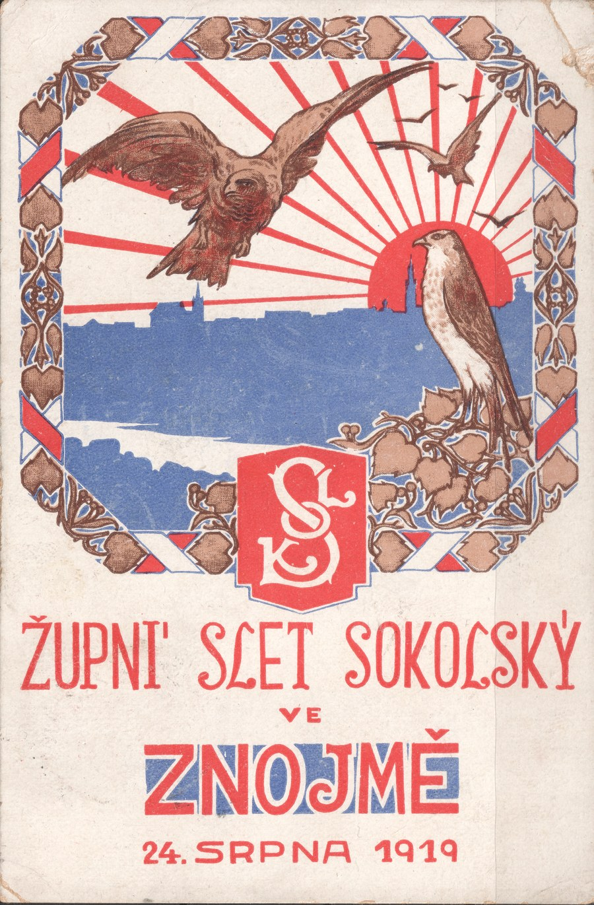
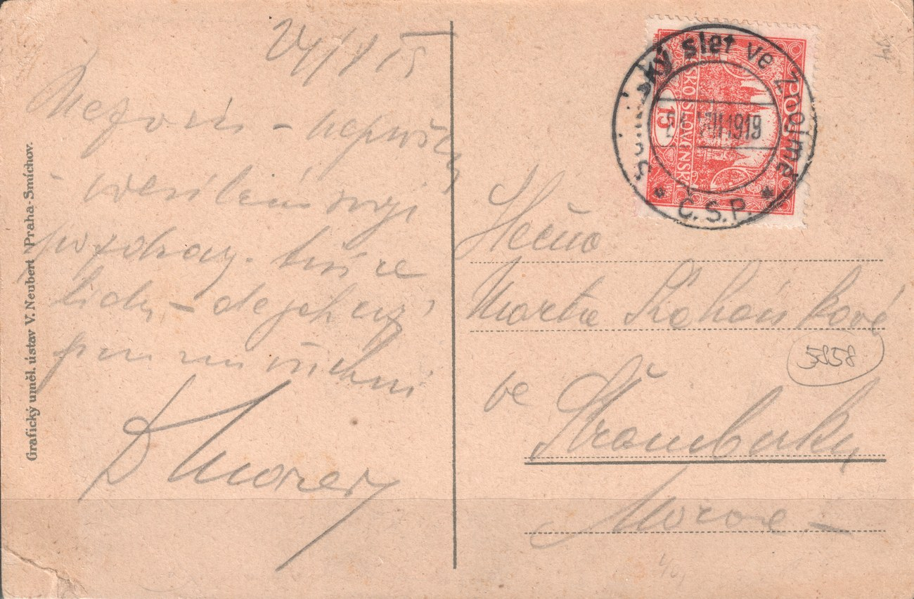
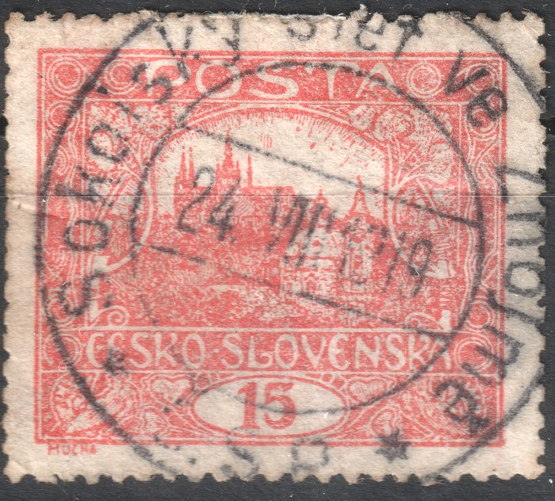
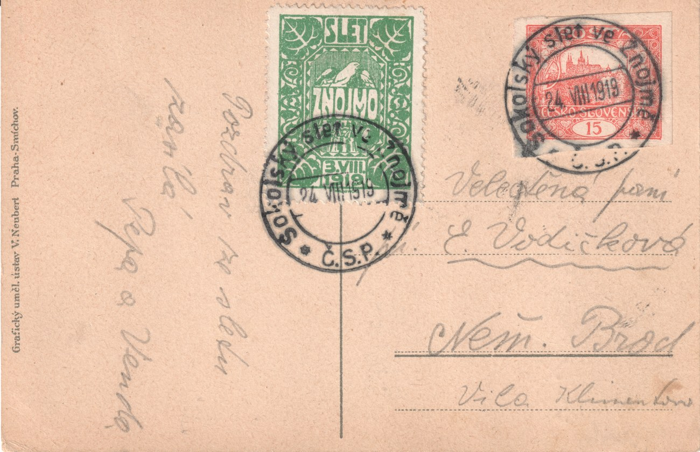
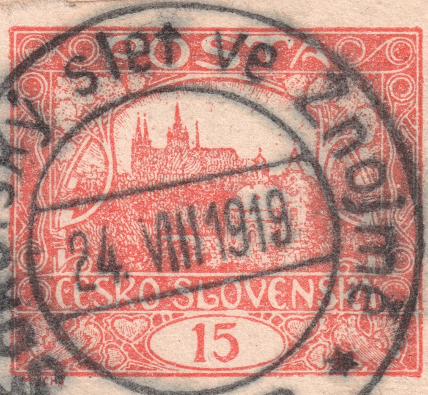
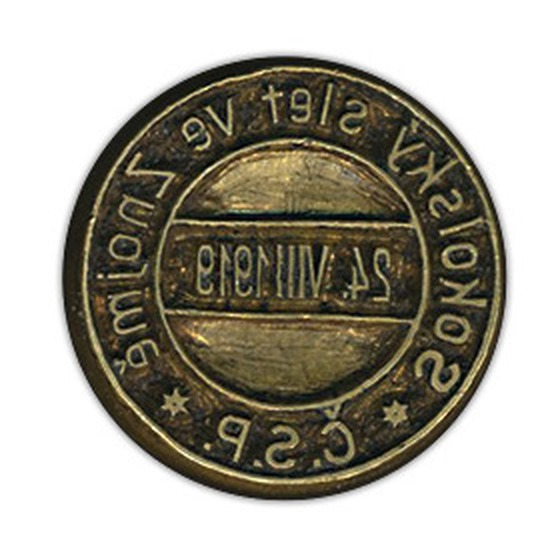

Rassemblement régional du Sokol à Znojmo, 24 août 1919 — la plus ancienne oblitération commémorative sur l'émission du Hradschin
Parmi les témoignages de l'usage postal de l'émission du Hradschin, une carte postale envoyée de Znojmo à Štramberk, en Moravie, occupe une place particulière. Elle porte une seule oblitération — le cachet commémoratif circulaire ŽUPNÍ SLET SOKOLSKÝ VE ZNOJMĚ · C.S.P. (« Rassemblement régional du Sokol à Znojmo »), daté du 24 août 1919, soit le premier jour du rassemblement. D'après les relevés effectués jusqu'à présent, il s'agit du plus ancien usage documenté d'une oblitération commémorative tchécoslovaque sur un timbre de l'émission du Hradschin.

Le pli et son affranchissement
La carte postale est affranchie d'un seul timbre 15 h rouge brique, non dentelé, attribué à la position 73 de la planche II. Le tarif de 15 h pour une carte postale correspond à la 2e période tarifaire (15 mai 1919 – 14 mars 1920), dans laquelle s'inscrit la date du 24 août 1919. La destinataire était Mademoiselle Marta Kokršková, à Štramberk.


Un second exemplaire répertorié — position 57/II, dentelure A
Un second timbre portant la même oblitération a également été retrouvé dans la collection — cette fois un exemplaire isolé, détaché de tout pli, avec dentelure A (13¾:13½) et attribué à la position 57 de la même planche II. L'empreinte de l'oblitération est parfaitement lisible sur cet exemplaire et confirme le même texte et la même date que l'exemplaire de la carte postale.

Deux exemplaires différents de la même planche — l'un non dentelé, l'autre en dentelure A — montrent que l'oblitération était disponible le jour du rassemblement pour les deux états des feuilles de la planche II alors simultanément en circulation.
Un troisième exemplaire répertorié — le pli vers Německý Brod, position 76/I
Un troisième pli portant la même oblitération a également été retrouvé — une carte postale envoyée elle aussi de Znojmo, adressée à Mme E. Vodičková à Německý Brod (villa Klementka). Elle est affranchie d'un timbre 15 h rouge brique, non dentelé, que le collectionneur a attribué, par comparaison avec la bibliothèque de référence, à la position 76 de la planche d'impression I — il s'agit donc du premier exemplaire répertorié de cette oblitération sur une planche autre que la II. En raison de l'empreinte appuyée du cachet sur le dessin, l'attribution n'a pu être entièrement confirmée à l'œil d'après les signes distinctifs catalogués; elle constitue néanmoins une estimation fiable.

Ce qui rend ce pli intéressant, c'est qu'outre le timbre-poste, il porte aussi une vignette souvenir Sokol non postale, verte, SLET ZNOJMO, représentant un faucon (motif rappelant le nom du mouvement Sokol) et portant sa propre date préimprimée du 8 août 1919 — les deux éléments ayant été liés à la carte par cette même oblitération commémorative du 24 août 1919. Le pli montre ainsi que l'oblitération a aussi été employée, à l'occasion, sur des vignettes souvenir Sokol privées, et non seulement sur des timbres d'affranchissement valides.

Pourquoi cette oblitération est la première
L'oblitération commémorative portait, sur l'arc supérieur, le texte SOKOLSKÝ SLET VE ZNOJMĚ, sur l'arc inférieur l'abréviation C.S.P. (« Poste tchéco-slovaque ») et, au centre, un pont dateur réglable indiquant 24 août 1919. Une photographie de l'appareil d'oblitération lui-même a également été conservée (image inversée, telle qu'elle apparaît sur le type métallique/en caoutchouc avant l'impression) :

Les oblitérations commémoratives ne sont devenues un usage régulier de la poste tchécoslovaque d'après-guerre que dans les années suivantes ; l'oblitération du rassemblement de Znojmo du 24 août 1919 précède — d'après les relevés réunis jusqu'à présent pour l'émission du Hradschin — tout autre usage documenté d'une oblitération commémorative sur cette émission. Avec trois exemplaires répertoriés à ce jour — deux de la planche d'impression II et un de la planche I — il apparaît en outre clairement que le bureau de poste de Znojmo disposait ce jour-là d'un stock de timbres de 15 h provenant de plus d'une planche. Si des lecteurs connaissent un usage daté plus ancien sur un timbre du Hradschin, nous serions heureux d'en être informés — les relevés seront complétés au fil des nouvelles découvertes.